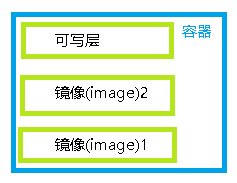

pacman -S docker docker-compose # 安装docker docker-compose
sudo systemctl enable docker # 系统启动时自动启动docker服务
sudo systemctl start docker # 启动docker服务
sudo mkdir -p /etc/docker # 创建docker配置目录
sudo tee /etc/docker/daemon.json <<-'EOF' # 设置aliyun镜像
{
"registry-mirrors": ["https://xxx.mirror.aliyuncs.com"]
}
EOF
sudo systemctl daemon-reload
sudo systemctl restart docker
sudo docker search tutorial # 测试是否可用
镜像, 一个只读的文件
容器, 是从某镜像为基础创建的运行实例, 运行实例不会修改镜像数据, 修改操作会保存在镜像之上的可写层, 可写层最终会变成镜像, 变为只读.

查找镜像
docker search tutorial
docker search httpd
下载镜像
docker pull ubuntu:13.10
查看本地镜像
docker images
创建镜像
基于容器创建镜像
docker run ubuntu:13.10 touch test.txt # 在镜像上创建test.txt
docker ps -a # 查看创建test.txt后的容器id, fc7b8511c294
docker commit -m 'Add test.txt file' fc7b8511c294 test_repo:test_tag # 用容器id fc7b8511c294创建新镜像
docker images # 查看创建的新镜像
基于本地模板创建镜像
cat ubuntu.tar.gz | docker import - test_repo:test_tag # 以ubuntu.tar.gz为模板创建镜像
docker images # 查看创建的新镜像
基于Dockerfile创建镜像
# 指定基于什么基础镜像
FROM ubuntu:13.10
# 维护者信息
MAINTAINER user user@email.com
# 指定环境变量
ENV VERSION 1.2.3
# 指定工作路径
WORKDIR /tmp
# 镜像内执行的命令, 每条命令执行后将容器commit为新镜像, 后续命令以新镜像为基础镜像
RUN cat /
RUN echo 'hello Dockerfile'
# 告诉Docker服务器容器暴露的端口号
EXPOSE 22
# 容器启动时执行的命令, 每个Dockerfile只能有一个CMD
CMD ["echo", "hello cmd"]
创建镜像
docker build
删除镜像
docker rmi fc7b8511c294
创建并启动容器
docker run ubuntu:13.10 echo 'Hello ubuntu in docker'
docker run -d ubuntu:13.10 echo 'Hello ubuntu in docker' # 以后台服务运行
docker run -p 5000:5000 ubuntu:13.10 echo 'Hello ubuntu in docker' # 映射端口5000到5000
在当前容器中执行命令
docker exec ubuntu:13.10 echo 'Hello ubuntu in docker'
查看容器id, 容器大小
docker ps -a -s
查看容器输出信息
docker logs -f 49c25062f661
终止容器
docker stop 49c25062f661
启动容器
docker start cdf8b9e60f30
删除容器
docker rm cdf8b9e60f30
docker rm -f $(sudo docker ps -a -q)
查看容器资源占用
docker stats
查看容器端口映射
docker port 84f3e6b91390